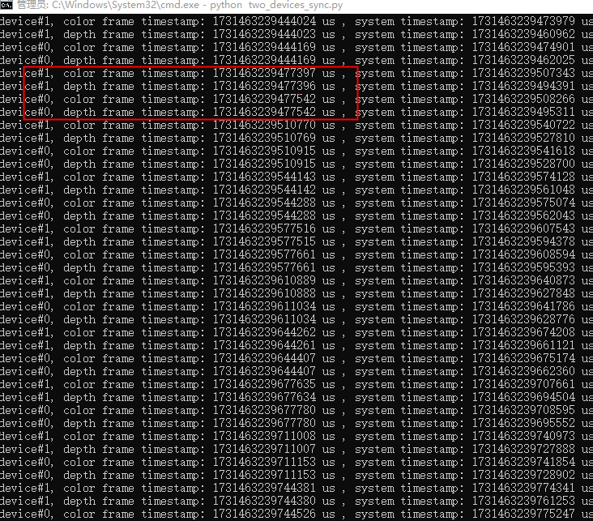

5.1. 创建设备
获取 Device 有多种方式。如果需要使用多个设备，建议使用方式 1、方式 2 或方式 3。单设备场景建议使用方式 4 获取 Device。
from pyorbbecsdk import *
# Create a Context
ctx = Context()
# Method 1
# Enumerate all connected devices through the Context.
device_list = ctx.query_devices()
# Get the device at index 0.
device = device_list.get_device_by_index(0)
# Method 2
# Enumerate all connected devices through the Context.
device_list = ctx.query_devices()
# Get the device by serial number.
device = device_list.get_device_by_serial_number("AE4M73D0040")
# Method 3
# Enumerate all connected devices through the Context.
device_list = ctx.query_devices()
# Get the device by uid.
device = device_list.get_device_by_uid("NDSG3958LKHY45")
# Method 4
pipeline = Pipeline()
# Get the device by pipeline.
device = pipeline.get_device()
5.2. 创建 Pipeline
创建 Pipeline 有两种方式。多设备场景请使用方式 2，为每个 Device 创建独立的 Pipeline。单设备场景使用方式 1 最为直接。
from pyorbbecsdk import *
# Method 1
pipeline = Pipeline()
# Method 2，create with device
pipeline = Pipeline(device)
5.3. 获取传感器列表
从 Device 获取传感器列表，再从列表中获取支持的传感器类型。
from pyorbbecsdk import *
# 1.Create a pipeline with default device.
pipeline = Pipeline()
# 2.Get device with pipeline
device = pipeline.get_device()
# 3.Get the sensor list from device.
sensor_list = device.get_sensor_list()
# 4.Enable all available video streams
config = Config()
for sensor in range(len(sensor_list)):
sensor_type = sensor_list[sensor].get_type()
print(f"Enabling sensor type: {sensor_type}")
config.enable_stream(sensor_type)
5.4. 获取视频数据流
常见数据流包括深度、左红外、右红外和彩色。以深度流为例，分辨率设为 640x400、帧率设为 15 fps、输出格式设为 Y16。红外和彩色流的处理流程类似。
阻塞轮询模式与异步回调模式的区别：阻塞轮询模式下，Pipeline 聚合帧后将帧放入队列，应用通过调用 wait_for_frames 从队列获取帧数据。异步回调模式下，帧聚合后直接通过回调传递给应用。异步回调实时性更好，但应用应避免在回调函数中执行耗时任务，并尽快释放帧。
5.4.1. 阻塞轮询模式（视频数据流）
关键 API 说明：
import numpy as np
import cv2
from pyorbbecsdk import *
# 1.Create a pipeline with default device.
pipeline = Pipeline()
# 2.Create config.
config = Config()
# 3.Enable video stream. You can modify the parameters based on your usage requirements
profile_list = pipeline.get_stream_profile_list(OBSensorType.DEPTH_SENSOR)
depth_profile = profile_list.get_video_stream_profile(640, 400, OBFormat.Y16, 15)
config.enable_stream(depth_profile)
# 4.Start the pipeline with config.
pipeline.start(config)
while True:
# 5.Wait for up to 100ms for a frameset in blocking mode.
frames = pipeline.wait_for_frames(100)
if frames is None:
continue
depth_frame = frames.get_depth_frame()
if depth_frame is None:
continue
depth_format = depth_frame.get_format()
if depth_format != OBFormat.Y16:
print("depth format is not Y16")
continue
width = depth_frame.get_width()
height = depth_frame.get_height()
scale = depth_frame.get_depth_scale()
depth_data = np.frombuffer(depth_frame.get_data(), dtype=np.uint16)
depth_data = depth_data.reshape((height, width))
depth_data = depth_data.astype(np.float32) * scale
depth_data = depth_data.astype(np.uint16)
depth_image = cv2.normalize(depth_data, None, 0, 255, cv2.NORM_MINMAX, dtype=cv2.CV_8U)
depth_image = cv2.applyColorMap(depth_image, cv2.COLORMAP_JET)
# 6.Stop the pipeline
pipeline.stop()
5.4.2. 异步回调模式（视频数据流）
关键 API 说明：
import numpy as np
import cv2
from pyorbbecsdk import *
def on_new_frame_callback(frame: FrameSet):
"""Callback function to handle new frames"""
if frame is None:
return
depth_frame = frame.get_depth_frame()
if depth_frame is None:
return
depth_format = depth_frame.get_format()
if depth_format != OBFormat.Y16:
print("depth format is not Y16")
return
width = depth_frame.get_width()
height = depth_frame.get_height()
scale = depth_frame.get_depth_scale()
depth_data = np.frombuffer(depth_frame.get_data(), dtype=np.uint16)
depth_data = depth_data.reshape((height, width))
depth_data = depth_data.astype(np.float32) * scale
depth_data = depth_data.astype(np.uint16)
depth_image = cv2.normalize(depth_data, None, 0, 255, cv2.NORM_MINMAX, dtype=cv2.CV_8U)
depth_image = cv2.applyColorMap(depth_image, cv2.COLORMAP_JET)
def main():
# 1.Create a pipeline with default device.
pipeline = Pipeline()
# 2.Create config.
config = Config()
# 3.Enable video stream. You can modify the parameters based on your usage requirements
profile_list = pipeline.get_stream_profile_list(OBSensorType.DEPTH_SENSOR)
depth_profile = profile_list.get_video_stream_profile(640, 400, OBFormat.Y16, 15)
config.enable_stream(depth_profile)
# 4.Start the pipeline with config.
pipeline.start(config, lambda frames: on_new_frame_callback(frames))
# ...
# 5.Stop the pipeline
pipeline.stop()
注意：Gemini 330 系列支持左红外和右红外传感器，类型分别为 OBSensorType.LEFT_IR_SENSOR 和 OBSensorType.RIGHT_IR_SENSOR。深度传感器类型为 OBSensorType.DEPTH_SENSOR，彩色传感器类型为 OBSensorType.COLOR_SENSOR。
5.5. 获取 IMU 数据流
5.5.1. 阻塞轮询模式（IMU 数据流）
关键 API 说明：
from pyorbbecsdk import *
# 1.Create a pipeline with default device.
pipeline = Pipeline()
# 2.Create config.
config = Config()
# 3.Enable Accel stream.
config.enable_accel_stream()
# 4.Enable Gyro stream.
config.enable_gyro_stream()
# 5.Start the pipeline with config.
pipeline.start(config);
while True:
# 6.Wait for up to 100ms for a frameset in blocking mode.
frames = pipeline.wait_for_frames(100)
if frames is None:
continue
accel_frame = frames.get_frame(OBFrameType.ACCEL_FRAME)
accel_frame = accel_frame.as_accel_frame()
gyro_frame = frames.get_frame(OBFrameType.GYRO_FRAME)
gyro_frame = gyro_frame.as_gyro_frame()
# 7.Stop the pipeline
pipeline.stop();
完整代码参见：examples/beginner/07_imu.py。
5.5.2. 异步回调模式（IMU 数据流）
关键 API 说明：
from pyorbbecsdk import *
def on_new_frame_callback(frame: FrameSet):
"""Callback function to handle new frames"""
if frame is None:
return
accel_frame = frame.get_frame(OBFrameType.ACCEL_FRAME)
accel_frame = accel_frame.as_accel_frame()
gyro_frame = frame.get_frame(OBFrameType.GYRO_FRAME)
gyro_frame = gyro_frame.as_gyro_frame()
def main():
# 1.Create a pipeline with default device.
pipeline = Pipeline()
# 2.Create config.
config = Config()
# 3.Enable Accel stream.
config.enable_accel_stream()
# 4.Enable Gyro stream.
config.enable_gyro_stream()
# 5.Start the pipeline with config.
pipeline.start(config, lambda frames: on_new_frame_callback(frames))
# ...
# 6.Stop the pipeline
pipeline.stop();
5.6. 获取相机内参与外参
from pyorbbecsdk import *
pipeline = Pipeline()
profile_list = pipeline.get_stream_profile_list(OBSensorType.COLOR_SENSOR)
# Get color_profile
color_profile = profile_list.get_default_video_stream_profile()
profile_list = pipeline.get_stream_profile_list(OBSensorType.DEPTH_SENSOR)
# Get depth_profile
depth_profile = profile_list.get_default_video_stream_profile()
# Get external parameters
extrinsic = depth_profile.get_extrinsic_to(color_profile)
print("extrinsic {}".format(extrinsic))
# Get depth inernal parameters
depth_intrinsics = depth_profile.get_intrinsic()
print("depth_intrinsics {}".format(depth_intrinsics))
# Get depth distortion parameter
depth_distortion = depth_profile.get_distortion()
print("depth_distortion {}".format(depth_distortion))
# Get color internala parameters
color_intrinsics = color_profile.get_intrinsic()
print("color_intrinsics {}".format(color_intrinsics))
# Get color distortion parameter
color_distortion = color_profile.get_distortion()
print("color_distortion {}".format(color_distortion))
# Stop the pipeline
pipeline.stop()
5.7. 帧聚合
帧聚合功能用于配置帧数据流的输出模式，可通过 Config 提供的接口设置。帧聚合模式有四种：
OBFrameAggregateOutputMode.FULL_FRAME_REQUIRE
仅输出包含所有预期类型数据帧的 FrameSet。
OBFrameAggregateOutputMode.COLOR_FRAME_REQUIRE
仅在包含彩色帧时输出 FrameSet。适用于使用 H264、H265 等帧间编码格式的彩色流。
注意：此模式下，FrameSet 中的非彩色帧可能为空。
OBFrameAggregateOutputMode.ANY_SITUATION
无论是否完整，均输出 FrameSet。
注意：如果某种类型的帧不可用，FrameSet 中对应的帧可能为空。
OBFrameAggregateOutputMode.DISABLE
禁用帧聚合。所有类型的帧独立输出。
例如，同时启用深度、彩色、左红外和右红外流，并将帧聚合模式设为 FULL_FRAME_REQUIRE 时，返回的 FrameSet 将包含四种流的非空帧数据。示例代码如下：
from pyorbbecsdk import *
# 1.Create a pipeline with default device.
pipeline = Pipeline()
# 2.Create config.
config = Config()
# 3.Enable depth video stream.
profile_list = pipeline.get_stream_profile_list(OBSensorType.DEPTH_SENSOR)
depth_profile = profile_list.get_default_video_stream_profile()
config.enable_stream(depth_profile)
# 4.Enable color video stream.
profile_list = pipeline.get_stream_profile_list(OBSensorType.COLOR_SENSOR)
color_profile = profile_list.get_default_video_stream_profile()
config.enable_stream(color_profile)
# 5.Enable left ir video stream.
left_profile_list = pipeline.get_stream_profile_list(OBSensorType.LEFT_IR_SENSOR)
left_ir_profile = left_profile_list.get_default_video_stream_profile()
config.enable_stream(left_ir_profile)
# 6.Enable right ir video stream.
right_profile_list = pipeline.get_stream_profile_list(OBSensorType.RIGHT_IR_SENSOR)
right_ir_profile = right_profile_list.get_default_video_stream_profile()
config.enable_stream(right_ir_profile)
# 7.Set the frame aggregate output mode to ensure all types of frames are included in the output frameset
config.set_frame_aggregate_output_mode(OBFrameAggregateOutputMode.FULL_FRAME_REQUIRE)
# 8.Start the pipeline with config.
pipeline.start(config)
while True:
# 9.Wait for up to 100ms for a frameset in blocking mode.
frames = pipeline.wait_for_frames(100)
if frames is None:
continue
# 10.Get all frames
color_frame = frames.get_color_frame()
depth_frame = frames.get_depth_frame()
left_ir_frame = frames.get_frame(OBFrameType.LEFT_IR_FRAME)
right_ir_frame = frames.get_frame(OBFrameType.RIGHT_IR_FRAME)
# 11.Stop the pipeline.
pipeline.stop();
完整代码参见：examples/advanced/10_hdr.py。
5.8. D2C
D2C 需要同时启用深度和彩色流。以下介绍硬件 D2C 和软件 D2C。
5.8.1. 硬件 D2C
硬件 D2C 的关键是通过 Config 将 D2C 模式设为硬件模式，以启用硬件 D2C 功能。
config.set_align_mode(OBAlignMode.HW_MODE)
关键 API 说明：
from pyorbbecsdk import *
def main():
# 1.Create a pipeline with default device.
pipeline = Pipeline()
# 2.Create config.
config = Config()
# 3.Get the list of color stream profiles
profile_list = pipeline.get_stream_profile_list(OBSensorType.COLOR_SENSOR)
# Iterate through the color stream profiles
for i in range(len(profile_list)):
color_profile = profile_list[i]
# Check if the color format is RGB
if color_profile.get_format() != OBFormat.RGB:
continue
# Get the list of hardware aligned depth-to-color profiles
hw_d2c_profile_list = pipeline.get_d2c_depth_profile_list(color_profile, OBAlignMode.HW_MODE)
if len(hw_d2c_profile_list) == 0:
continue
# Get the first hardware aligned depth-to-color profile
hw_d2c_profile = hw_d2c_profile_list[0]
print("hw_d2c_profile: ", hw_d2c_profile)
# 4.Enable the depth and color streams
config.enable_stream(hw_d2c_profile)
config.enable_stream(color_profile)
# 5.Set the alignment mode to hardware alignment
config.set_align_mode(OBAlignMode.HW_MODE)
break
else:
return
# 6.Start the pipeline
pipeline.start(config)
while True:
# 7.Wait for frames
frames = pipeline.wait_for_frames(100)
if frames is None:
continue
# Get the color and depth frames
color_frame = frames.get_color_frame()
depth_frame = frames.get_depth_frame()
# 8.Stop the pipeline
pipeline.stop()
完整代码参见：examples/beginner/03_color_and_depth_aligned.py。
python examples/beginner/03_color_and_depth_aligned.py --hw
5.8.2. 软件 D2C
软件 D2C 可采用同步或异步方式实现，以下介绍同步方式。
核心接口
align_filter = AlignFilter(align_to_stream=OBStreamType.COLOR_STREAM)
关键 API 说明：
from pyorbbecsdk import *
def main():
# 1.Create a pipeline with default device.
pipeline = Pipeline()
# 2.Create config.
config = Config()
# 3.Enable color profile
profile_list = pipeline.get_stream_profile_list(OBSensorType.COLOR_SENSOR)
color_profile = profile_list.get_video_stream_profile(0, 0, OBFormat.RGB, 0)
config.enable_stream(color_profile)
# 4.Enable depth profile
profile_list = pipeline.get_stream_profile_list(OBSensorType.DEPTH_SENSOR)
depth_profile = profile_list.get_video_stream_profile(0, 0, OBFormat.Y16, 0)
config.enable_stream(depth_profile)
# 5.Set the frame aggregate output mode to ensure all types of frames are included in the output frameset
config.set_frame_aggregate_output_mode(OBFrameAggregateOutputMode.FULL_FRAME_REQUIRE)
# 6.Start the pipeline with config.
pipeline.start(config)
# 7.Create a filter to align depth frame to color frame
align_filter = AlignFilter(align_to_stream=OBStreamType.COLOR_STREAM)
while True:
# 8.Wait for frames
frames = pipeline.wait_for_frames(100)
if frames is None:
continue
# 9.Filter the data
frames = align_filter.process(frames)
if not frames:
continue
frames = frames.as_frame_set()
# Get the color and depth frames
color_frame = frames.get_color_frame()
depth_frame = frames.get_depth_frame()
# 10.Stop the pipeline
pipeline.stop()
5.9. 软件 C2D
软件 C2D 可采用同步或异步方式实现，以下介绍同步方式。
核心接口
align_filter = AlignFilter(align_to_stream=OBStreamType.DEPTH_STREAM)
关键 API 说明：
from pyorbbecsdk import *
def main():
# 1.Create a pipeline with default device.
pipeline = Pipeline()
# 2.Create config.
config = Config()
# 3.Enable color profile
profile_list = pipeline.get_stream_profile_list(OBSensorType.COLOR_SENSOR)
color_profile = profile_list.get_video_stream_profile(0, 0, OBFormat.RGB, 0)
config.enable_stream(color_profile)
# 4.Enable depth profile
profile_list = pipeline.get_stream_profile_list(OBSensorType.DEPTH_SENSOR)
depth_profile = profile_list.get_video_stream_profile(0, 0, OBFormat.Y16, 0)
config.enable_stream(depth_profile)
# 5.Set the frame aggregate output mode to ensure all types of frames are included in the output frameset
config.set_frame_aggregate_output_mode(OBFrameAggregateOutputMode.FULL_FRAME_REQUIRE)
# 6.Start the pipeline with config.
pipeline.start(config)
# 7.Create a filter to align color frame to depth frame
align_filter = AlignFilter(align_to_stream=OBStreamType.DEPTH_STREAM)
while True:
# 8.Wait for frames
frames = pipeline.wait_for_frames(100)
if frames is None:
continue
# 9.Filter the data
frames = align_filter.process(frames)
if not frames:
continue
frames = frames.as_frame_set()
# Get the color and depth frames
color_frame = frames.get_color_frame()
depth_frame = frames.get_depth_frame()
# 10.Stop the pipeline
pipeline.stop()
5.10. 深度点云
SDK 提供 PointCloudFilter，用于处理深度数据并生成点云。
关键 API 说明：
from pyorbbecsdk import *
import os
save_points_dir = os.path.join(os.getcwd(), "point_clouds")
if not os.path.exists(save_points_dir):
os.mkdir(save_points_dir)
def main():
# 1.Create a pipeline with default device.
pipeline = Pipeline()
# 2.Create config.
config = Config()
# 3.Enable depth profile
profile_list = pipeline.get_stream_profile_list(OBSensorType.DEPTH_SENSOR)
depth_profile = profile_list.get_video_stream_profile(0, 0, OBFormat.Y16, 0)
config.enable_stream(depth_profile)
# 4.Start the stream
pipeline.start(config)
# 5.Create point cloud filter
point_cloud_filter = PointCloudFilter()
point_cloud_filter.set_create_point_format(OBFormat.POINT)
while True:
# 6.Wait for frames
frames = pipeline.wait_for_frames(100)
if frames is None:
continue
# 7.Apply the point cloud filter
point_cloud_frame = point_cloud_filter.process(frames)
# 8.save point cloud
save_point_cloud_to_ply(os.path.join(save_points_dir, "depth_point_cloud.ply"), point_cloud_frame)
break
# 9.Stop the pipeline
pipeline.stop()
5.11. RGBD 点云
通过 SDK 获取深度和彩色数据流，再使用 PointCloudFilter 处理，即可生成 RGBD 点云。
关键 API 说明：
from pyorbbecsdk import *
import os
save_points_dir = os.path.join(os.getcwd(), "point_clouds")
if not os.path.exists(save_points_dir):
os.mkdir(save_points_dir)
def main():
# 1.Create a pipeline with default device.
pipeline = Pipeline()
# 2.Create config.
config = Config()
# 3.Enable color profile
profile_list = pipeline.get_stream_profile_list(OBSensorType.COLOR_SENSOR)
color_profile = profile_list.get_video_stream_profile(0, 0, OBFormat.RGB, 0)
config.enable_stream(color_profile)
# 4.Enable depth profile
profile_list = pipeline.get_stream_profile_list(OBSensorType.DEPTH_SENSOR)
depth_profile = profile_list.get_video_stream_profile(0, 0, OBFormat.Y16, 0)
config.enable_stream(depth_profile)
# 5.Set the frame aggregate output mode to ensure all types of frames are included in the output frameset
config.set_frame_aggregate_output_mode(OBFrameAggregateOutputMode.FULL_FRAME_REQUIRE)
# 6.Start the stream
pipeline.enable_frame_sync()
pipeline.start(config)
# 7.Create point cloud filter
point_cloud_filter = PointCloudFilter()
# 8.Create a filter to align depth frame to color frame
align_filter = AlignFilter(align_to_stream=OBStreamType.COLOR_STREAM)
point_cloud_filter.set_create_point_format(OBFormat.RGB_POINT)
while True:
# 9.Wait for frames
frames = pipeline.wait_for_frames(100)
if frames is None:
continue
# 10.Filter the data
align_frame = align_filter.process(frames)
if not align_frame:
continue
# 11.Apply the point cloud filter
point_cloud_frame = point_cloud_filter.process(align_frame)
# 12.save point cloud
save_point_cloud_to_ply(os.path.join(save_points_dir, "rgb_point_cloud.ply"), point_cloud_frame)
break
# 13.Stop the pipeline
pipeline.stop()
5.12. 去噪滤波器
5.12.1. 硬件去噪滤波器
硬件去噪滤波器通过设备端处理减少深度噪声。
目前仅 Gemini 330 系列支持此功能（固件版本 1.4.60 及以上）。
启用硬件滤波时，建议关闭软件去噪滤波器，以降低 CPU 占用。
关键 API 说明：
# 1.Get device by Pipeline
device = pipeline.get_device()
if device.is_property_supported(OBPropertyID.OB_PROP_HW_NOISE_REMOVE_FILTER_ENABLE_BOOL, OBPermissionType.PERMISSION_WRITE):
# 2.enable hardware noise removal filter.
device.set_bool_property(OBPropertyID.OB_PROP_HW_NOISE_REMOVE_FILTER_ENABLE_BOOL, True)
# 3.Adjust the threshold for hardware noise removal filter.
device.set_float_property(OBPropertyID.OB_PROP_HW_NOISE_REMOVE_FILTER_THRESHOLD_FLOAT, 0.2)
5.12.2. 软件去噪滤波器
软件去噪滤波器是 SDK 提供的处理功能，通过软件算法减少深度噪声。
关键 API 说明：
# 1.Get device by Pipeline
device = pipe.get_device()
# 2.Determine whether to enable filter
enable = device.get_bool_property(OBPropertyID.OB_PROP_DEPTH_NOISE_REMOVAL_FILTER_BOOL)
# 3.Get filter-related parameters
max_diff = device.get_int_property(OBPropertyID.OB_PROP_DEPTH_NOISE_REMOVAL_FILTER_MAX_DIFF_INT)
min_diff = device.get_int_property(OBPropertyID.OB_PROP_DEPTH_NOISE_REMOVAL_FILTER_MAX_SPECKLE_SIZE_INT)
# 4.Set the relevant filter parameters
device.set_bool_property(OBPropertyID.OB_PROP_DEPTH_NOISE_REMOVAL_FILTER_BOOL, True)
device.set_int_property(OBPropertyID.OB_PROP_DEPTH_NOISE_REMOVAL_FILTER_MAX_DIFF_INT, 512)
device.set_int_property(OBPropertyID.OB_PROP_DEPTH_NOISE_REMOVAL_FILTER_MAX_SPECKLE_SIZE_INT, 960)
5.13. 深度后处理滤波器
SDK 提供推荐的后处理滤波器列表。后处理滤波器列表接口的用法参见 examples/advanced/09_post_processing.py。
from pyorbbecsdk import *
# 1.Create a pipeline with default device.
pipeline = Pipeline()
# 2.Get device with pipeline
device = pipeline.get_device()
# 3.Get depth sensor
depth_sensor = device.get_sensor(OBSensorType.DEPTH_SENSOR)
# 4.Get a list of post-processing filtering recommendations
filter_list = depth_sensor.get_recommended_filters()
# 5.Apply the recommended filters to the depth frame
for i, post_filter in enumerate(filter_list):
if post_filter.is_enabled():
# Only apply enabled filters
new_depth_frame = post_filter.process(new_depth_frame)
5.14. 录制与回放
5.14.1. 录制
数据流录制主要通过 RecordDevice 实现。
关键 API 说明：
from pyorbbecsdk import Config, OBSensorType, Pipeline, RecordDevice
file_path = input("Output .bag filename: ")
pipeline = Pipeline()
device = pipeline.get_device()
config = Config()
video_sensors = {
OBSensorType.COLOR_SENSOR, OBSensorType.DEPTH_SENSOR,
OBSensorType.IR_SENSOR, OBSensorType.LEFT_IR_SENSOR,
OBSensorType.RIGHT_IR_SENSOR,
}
sensor_list = device.get_sensor_list()
for index in range(len(sensor_list)):
sensor_type = sensor_list[index].get_type()
if sensor_type in video_sensors:
config.enable_stream(sensor_type)
recorder = RecordDevice(device, file_path)
pipeline.start(config)
try:
recorder.resume()
print("Recording; press Ctrl+C to stop.")
while True:
pipeline.wait_for_frames(100)
except KeyboardInterrupt:
pass
finally:
recorder.pause()
recorder = None # Release the recorder to finalize the bag file.
pipeline.stop()
完整代码参见：examples/advanced/01_recorder.py。
5.14.2. 回放
数据流回放主要通过 PlaybackDevice 实现。
关键 API 说明：
from threading import Event
from pyorbbecsdk import Config, OBPlaybackStatus, OBSensorType, Pipeline, PlaybackDevice
file_path = input("Input .bag filename: ")
playback = PlaybackDevice(file_path)
pipeline = Pipeline(playback)
config = Config()
video_sensors = {
OBSensorType.COLOR_SENSOR, OBSensorType.DEPTH_SENSOR,
OBSensorType.IR_SENSOR, OBSensorType.LEFT_IR_SENSOR,
OBSensorType.RIGHT_IR_SENSOR,
}
sensor_list = playback.get_sensor_list()
for index in range(len(sensor_list)):
sensor_type = sensor_list[index].get_type()
if sensor_type in video_sensors:
config.enable_stream(sensor_type)
finished = Event()
def on_status_change(status):
if status == OBPlaybackStatus.STOPPED:
finished.set() # Do not stop/restart the pipeline inside this callback.
playback.set_playback_status_change_callback(on_status_change)
pipeline.start(config)
try:
while not finished.is_set():
frames = pipeline.wait_for_frames(100)
if frames is None:
continue
color_frame = frames.get_color_frame()
if color_frame is not None:
# Process the color frame here.
print(color_frame.get_width(), color_frame.get_height())
except KeyboardInterrupt:
pass
finally:
pipeline.stop()
playback = None
完整代码参见：examples/advanced/02_playback.py。
5.15. 固件更新
用户可按需开发 RGBD 相机的固件更新功能。以下演示如何更新单台 RGBD 相机的固件，并提供对应的工作流程图。
关键 API 说明：
from pyorbbecsdk import *
def firmware_update_callback(state, message, percent):
# 5.Firmware upgrade status callback
print(f"Progress: {percent}%")
print(f"Status : {state}")
print(f"Message : {message}\n")
def main():
# 1.Create a context to access the connected devices
context = Context()
# 2.Get connected devices from the context
device_list = context.query_devices()
# 3.Get the first device.
device = device_list[0]
# 4.Set async to false to synchronously block and wait for the device firmware upgrade to complete.
device.update_firmware(firmware_path, firmware_update_callback, async_update=False)
# ...
# 6.Reboot the device after a successful update.
device.reboot();
注意：Femto Mega 系列设备不适用
如果固件已加载到内存，请使用以下接口进行更新，并确保该固件适用于当前连接的设备：
from pathlib import Path
firmware = Path(firmware_path).read_bytes()
device.update_firmware_from_data(firmware, firmware_update_callback, async_update=False)
默认采用异步更新（async_update=True）。更新完成前，请保留设备对象，避免其被销毁，并根据 SDK 回调状态判断更新是否成功。回调对象的保留时间和异常处理方式请参见设备二进制数据。
5.16. 更新预设
可以使用 update_optional_depth_presets API 更新设备的可选深度预设。
定义更新进度回调函数：可以定义回调来监视固件更新进度。每次设备报告更新状态时，都会自动调用此函数。
from pyorbbecsdk import *
# Callback function to display update progress
def preset_update_callback(first_call, state, message, percent):
print(f"Progress: {percent}%")
print(f"Status : {state}")
print(f"Message : {message}\n", end='')
选择设备后，调用 update_optional_depth_presets 函数并传入指定回调，以更新预设。
from pyorbbecsdk import *
# 1.Create a context to access the connected devices
context = Context()
# 2.Get connected devices from the context
device_list = context.query_devices()
# 3.Get the first device.
device = device_list[0]
# 4.update its presets by calling the update_optional_depth_presets function with the specified callback
device.update_optional_depth_presets(
preset_paths,
lambda state, message, percent: preset_update_callback(True, state, message, percent)
)
注意：此 API 支持一次更新多个预设。G300 系列设备每次最多写入 3 个预设，第一个写入的预设会被设为默认预设。
完整代码参见：examples/advanced/19_device_optional_depth_presets_update.py。
5.17. 设备断开与重连
SDK 提供设备连接变化监听机制，帮助处理意外断开，并在设备重新连接后自动恢复。
from pyorbbecsdk import *
def on_device_changed_callback(disconn_device_list: DeviceList, conn_device_list: DeviceList):
"""Handles device changes by invoking appropriate connect/disconnect callbacks."""
on_device_connected_callback(conn_device_list)
on_device_disconnected_callback(disconn_device_list)
def main():
# 1.create context
ctx = Context()
# 2.register device callback
ctx.set_device_changed_callback(on_device_changed_callback)
在 Context 的 on_device_changed_callback 回调中：
disconn_device_list 包含 SDK 检测到的已断开（离线）设备。
conn_device_list 包含 SDK 检测到的已连接（在线）设备。
完整代码参见：examples/advanced/05_hot_plug.py。
5.18. 常用接口
5.18.1. 重启设备
from pyorbbecsdk import *
context = Context()
device_list = context.query_devices()
#get device
device = device_list.get_device_by_index(0)
#reboot device
device.reboot()
5.18.2. 获取序列号
from pyorbbecsdk import *
context = Context()
device_list = context.query_devices()
device = device_list.get_device_by_index(0)
device_info = device.get_device_info()
# get device serial number
serial_number = device_info.get_serial_number()
5.18.3. 获取 IP 配置
from pyorbbecsdk import *
context = Context()
device_list = context.query_devices()
device = device_list.get_device_by_index(0)
device_info = device.get_device_info()
# get device ip address
ip_address = device_info.get_device_ip_address()
subnet_mask = device_info.get_device_subnet_mask()
gateway = device_info.get_device_gateway()
5.18.4. 获取本地网络配置
from pyorbbecsdk import *
context = Context()
device_list = context.query_devices()
# get local network configuration
local_mac_address = device_list.get_local_mac_address(0)
local_ip = device_list.get_local_ip(0)
local_subnet_length = device_list.get_local_subnet_length(0)
local_gateway = device_list.get_local_gateway(0)
5.18.5. IP 配置
这些函数用于管理设备网络设置，包括普通 IP 配置（断电保存）和强制 IP 配置（临时设置，不保存）。
5.18.5.1. 设置 IP 配置（持久化）
设置设备的 IP 地址、子网掩码和网关。配置会保存至设备，断电后仍有效。
from pyorbbecsdk import *
# Load and enable frame interleave
config = OBDeviceIpAddrConfig()
config.address = "192.168.1.32"
config.netmask = "255.255.255.0"
config.gateway = "192.168.1.1"
device.set_ip_config(config)
5.18.5.2. 强制 IP 配置（临时）
强制设备使用指定的 IP 设置。此配置为临时设置，断电后丢失。
from pyorbbecsdk import *
# Force temporary IP settings (not saved after power off)
config = get_ip_config()
device_status = context.ob_force_ip_config(device_list.get_device_uid_by_index(device_number), config)
完整代码参见：examples/advanced/18_forceip.py。
5.18.6. 获取设备温度
pipe = Pipeline()
device = pipe.get_device()
temperature = device.get_temperature()
5.18.7. 获取设备基线
pipe = Pipeline()
device = pipe.get_device()
baseline = device.get_baseline()
5.18.8. 结构化数据读写
读取或设置温度、基线、HDR、同步、深度工作模式、设备状态和 IP 配置时，应优先使用已有的专用方法。这些方法直接返回数值或配置对象，无需手动转换字节数据。对于没有合适专用封装的结构化属性，使用 get_structured_data(property_id) / set_structured_data(property_id, data)，并配合对应结构体的 from_bytes() / to_bytes() 方法完成转换。推荐 API 列表、通用接口用法、属性表和使用限制请参见结构化数据读写。
5.18.9. 设备二进制数据
使用 send_and_receive_data() 收发协议数据包，使用 read_customer_data() / write_customer_data() 读写设备中的客户数据存储区，使用 update_firmware_from_data() 更新已加载到内存的固件。容量限制、示例和异步更新行为请参见设备二进制数据。这些方法在 Python Wrapper 2.1.4 中可用。
5.18.10. 流配置
方式 1：通过分辨率、帧格式和帧率获取流配置
from pyorbbecsdk import *
pipeline = Pipeline()
# Obtain color profile through resolution, frame format and frame rate. A resolution width and height of 0 indicates wildcard characters
color_profile_list = pipeline.get_stream_profile_list(OBSensorType.COLOR_SENSOR)
color_profile= color_profile_list.get_video_stream_profile(640, 0, OBFormat.RGB, 30)
# Get depth profile through resolution, frame format and frame rate, resolution width and height are 0 to indicate wildcard characters
depth_profile_list = pipeline.get_stream_profile_list(OBSensorType.DEPTH_SENSOR)
depth_profile = depth_profile_list.get_video_stream_profile(640, 0, OBFormat.Y16, 30)
方式 2：获取默认流配置
from pyorbbecsdk import *
pipeline = Pipeline()
depth_profile_list = pipeline.get_stream_profile_list(OBSensorType.DEPTH_SENSOR)
# Obtain the default depth profile from the device configuration.
depth_profile = depth_profile_list.get_default_video_stream_profile()
方式 3：通过视频帧获取流配置
from pyorbbecsdk import *
pipeline = Pipeline()
pipeline.start()
try:
frames = pipeline.wait_for_frames(100)
if frames is None:
raise RuntimeError("No frames received")
depth_frame = frames.get_depth_frame()
if depth_frame is None:
raise RuntimeError("No depth frame received")
depth_profile = depth_frame.get_stream_profile()
finally:
pipeline.stop()
5.18.11. 获取 IMU StreamProfile
从 IMU 帧获取 IMU StreamProfile
frames = pipeline.wait_for_frames(100)
# Get the accel stream profile
accel_frame_raw = frames.get_frame(OBFrameType.ACCEL_FRAME)
accel_stream_profile = accel_frame_raw.get_stream_profile()
# Get the gyro stream profile
gyro_frame_raw = frames.get_frame(OBFrameType.GYRO_FRAME)
gyro_stream_profile = gyro_frame_raw.get_stream_profile()
5.18.12. 获取内参与外参
可通过 StreamProfile 获取内参与外参。
# Get the depth intrinsic
depth_intrinsic = depth_profile.get_intrinsic()
depth_distortion = depth_profile.get_distortion()
# Get the color intrinsic
color_intrinsic = color_profile.get_intrinsic()
color_distortion = color_profile.get_distortion()
# Get the depth to color extrinsic
depth_to_colorExtrinsic = depth_profile.get_extrinsic_to(color_profile)
5.18.13. 获取 IMU 内参
frames = pipeline.wait_for_frames(100)
# Get the accel stream profile
accel_frame_raw = frames.get_frame(OBFrameType.ACCEL_FRAME)
accel_stream_profile = accel_frame_raw.get_stream_profile()
# Get the accel stream intrinsic
accel_intrinsic = accel_stream_profile.get_intrinsic()
# Get the gyro stream profile
gyro_frame_raw = frames.get_frame(OBFrameType.GYRO_FRAME)
gyro_stream_profile = gyro_frame_raw.get_stream_profile()
# Get the gyro stream intrinsic
gyro_intrinsic = gyro_stream_profile.get_intrinsic()
5.18.14. LDP 开关
LDP（激光距离保护）模块能够检测近距离物体。启用 LDP 后，系统会检测相机指定距离范围内的障碍物，并逐步降低激光功率直至关闭激光，以实现激光保护。关闭 LDP 后，此功能不生效。
from pyorbbecsdk import *
#True：turn on LDP，False：turn off LDP
device.set_bool_property(OBPropertyID.OB_PROP_LDP_BOOL, True)
5.18.15. HDR 合并
目前仅 Gemini 330 系列支持，具体实现参见 SDK 示例。
关键 API 说明：
device = pipeline.get_device()
if device.isFrameInterleaveSupported():
device.loadFrameInterleave("Depth from HDR")
device.set_bool_property(OBPropertyID.OB_PROP_FRAME_INTERLEAVE_ENABLE_BOOL,True)
else:
config = OBHdrConfig()
config.enable = True
config.exposure_1 = 7500
config.gain_1 = 24
config.exposure_2 = 100
config.gain_2 = 16
device.set_hdr_config(config)
hdr_filter = HDRMergeFilter()
frames = pipeline.wait_for_frames(100)
merged_frame = hdr_filter.process(frames)
完整代码参见：examples/advanced/10_hdr.py。
5.18.16. 获取 LDP 测量值
在 LDP 开关启用时获取 LDP（激光距离保护）测量值。
distance = device.get_int_property(OBPropertyID.OB_PROP_LDP_MEASURE_DISTANCE_INT)
5.18.17. 获取 LDP 保护状态
ldp_status = device.get_bool_property(OBPropertyID.OB_PROP_LDP_STATUS_BOOL)
5.18.18. 激光开关
Gemini 330 开启或关闭激光的命令如下：
# Gemini 330 series Laser control, 0: off, 1: on, 2: auto
laser = 1 # 0: off, 1: on, 2: auto
device.set_int_property(OBPropertyID.OB_PROP_LASER_CONTROL_INT, laser)
Gemini 330 以外设备开启或关闭激光的命令如下：
device.set_bool_property(OBPropertyID.OB_PROP_LASER_BOOL, True)
5.18.19. 获取元数据
可从返回的 Frame 对象获取元数据。支持的帧类型包括深度、左红外、右红外和彩色。
from pyorbbecsdk import OBFrameMetadataType
# Assumes pipeline has already been started with a color stream enabled.
frame_set = pipeline.wait_for_frames(1000)
if frame_set is not None:
frame = frame_set.get_color_frame()
if frame is not None and frame.has_metadata(OBFrameMetadataType.EXPOSURE):
metadata_value = frame.get_metadata_value(OBFrameMetadataType.EXPOSURE)
完整代码参见：examples/advanced/07_metadata.py。
5.18.20. 触发采集
5.18.20.1. 软件触发采集
pipeline = Pipeline()
device = pipeline.get_device()
# First, configure the device to software trigger mode through the Device.
sync_config = device.get_multi_device_sync_config()
sync_config.mode = OBMultiDeviceSyncMode.SOFTWARE_TRIGGERING
device.set_multi_device_sync_config(sync_config)
# Finally, after starting the video stream, capture the data stream through the interface provided by the Device.
device.trigger_capture()
5.18.20.2. 定时采集
Gemini 2/Gemini 2 L 和早期固件版本的 Gemini 330 系列，需要由用户在应用中实现定时采集，即创建独立线程周期性触发软件采集。
# First, configure the device to software trigger mode through the Device.
cur_config = device.get_multi_device_sync_config()
cur_config.mode = OBMultiDeviceSyncMode.SOFTWARE_TRIGGERING
device.set_multi_device_sync_config(cur_config)
# Finally, after the video stream is started, a thread is created to periodically trigger via the interface provided by the Device.
device.trigger_capture()
Gemini 330 系列使用 v1.5.10 或更新固件，且使用 v2.2.12 或更新 OrbbecSDK 时，固件已内置定时采集功能。因此 SDK 提供两个新接口：一个启用定时采集，另一个设置固件端采集间隔，无需再创建线程手动触发采集。
# First, configure the device to software trigger mode through the Device.
cur_config = device.get_multi_device_sync_config()
cur_config.mode = OBMultiDeviceSyncMode.SOFTWARE_TRIGGERING
device.set_multi_device_sync_config(cur_config)
# Set the automatic snapshot interval, unit: ms
device.set_int_property(OBPropertyID.OB_DEVICE_AUTO_CAPTURE_INTERVAL_TIME_INT, 67)
# Enable automatic snapshot by setting it to true: automatic snapshot, set it to false: manual snapshot.
device.set_bool_property(OBPropertyID.OB_DEVICE_AUTO_CAPTURE_ENABLE_BOOL, True)
5.18.21. 时间戳重置
时间戳重置命令
此命令用于多设备同步场景，只需发送给主设备。主设备可配置为在重置自身时间戳时输出重置信号，使从设备也重置时间戳。
device.set_bool_property(OBPropertyID.OB_PROP_TIMER_RESET_SIGNAL_BOOL, True)
启用时间戳重置触发输出
启用此选项后，会向从设备发送时间戳重置信号。
# true: Indicates that the trigger signal is sent externally; false: Indicates that the trigger signal is not sent externally.
device.set_bool_property(OBPropertyID.OB_PROP_TIMER_RESET_TRIGGER_OUT_ENABLE_BOOL, True)
重置信号延迟
定义收到触发信号后延迟多久执行重置，可用于主从同步场景以避免激光干扰。
# The delay time is in microseconds (us), for example, setting it to 20 means 20 microseconds.
device.set_int_property(OBPropertyID.OB_PROP_TIMER_RESET_DELAY_US_INT, 20)
启用时间戳重置
Gemini 330 系列和 Gemini 2 系列可直接使用上述三个接口，无需额外调用启用命令。但 Femto Mega 系列必须先调用时间戳重置启用接口，才能使用重置功能及上述三个接口。
# true: Indicates that the timestamp reset function is enabled.
device.set_bool_property(OBPropertyID.OB_PROP_TIMER_RESET_ENABLE_BOOL, True)
5.18.22. 设备时间同步
设备校时：将主机时间设置到设备。
同步单台设备时，需要周期性调用时间同步函数，例如每分钟调用一次。
from pyorbbecsdk import *
pipeline = Pipeline()
device = pipeline.get_device()
device.timer_sync_with_host()
同步多台设备时，参数“repeatInterval”表示同步间隔，单位为毫秒（ms）。例如每分钟同步一次，可将 repeatInterval 设为 60 * 1000（ms）。
from pyorbbecsdk import *
context = Context()
# Parameter: The interval for auto-repeated synchronization, in milliseconds. If the value is 0, synchronization is performed only once.
context.enable_multi_device_sync(60000)
5.18.23. D2D（视差转深度）
视差转深度是一种将视差信息转换为深度信息的图像处理技术。
5.18.23.1. 硬件 D2D
硬件 D2D 指在设备内部实现视差转深度。Gemini 330 系列、Gemini 2、Gemini 2 L、Astra 2 等设备支持此功能。
from pyorbbecsdk import *
pipeline = Pipeline()
device = pipeline.get_device()
# Parameters: True to turn on hardware D2D, False to turn off hardware D2D
device.set_bool_property(OBPropertyID.OB_PROP_DISPARITY_TO_DEPTH_BOOL,True)
5.18.23.2. 软件 D2D
软件 D2D 指在 SDK 中实现视差转深度。除 Femto Mega、Femto Bolt 等 TOF 设备外，所有设备均支持软件 D2D。
from pyorbbecsdk import *
pipeline = Pipeline()
device = pipeline.get_device()
# Parameters: True to turn on Software D2D, False to turn off Software D2D
device.set_bool_property(OBPropertyID.OB_PROP_SDK_DISPARITY_TO_DEPTH_BOOL,True)
5.18.24. 深度设置
5.18.24.1. 深度工作模式
切换深度工作模式前，请停止所有数据流。以下示例先创建尚未启动数据流的 Pipeline，再列出设备支持的模式，并将选中的完整模式对象传入设置接口。如果使用的是正在采集数据的 Pipeline，请先停止数据流。
import pyorbbecsdk as ob
pipeline = ob.Pipeline()
device = pipeline.get_device()
modes = device.get_depth_work_mode_list()
if modes.get_count() == 0:
raise RuntimeError("No depth work modes available")
for index in range(modes.get_count()):
print(index, modes.get_depth_work_mode_by_index(index).name)
target_index = 0 # Choose an index from the printed list.
if not 0 <= target_index < modes.get_count():
raise ValueError("Mode index out of range")
selected = modes.get_depth_work_mode_by_index(target_index)
if device.set_depth_work_mode(selected) != ob.OBStatus.STATUS_OK:
raise RuntimeError("Failed to switch depth work mode")
actual = device.get_depth_work_mode()
if actual.name != selected.name or bytes(actual.checksum) != bytes(selected.checksum):
raise RuntimeError("Depth work mode readback differs")
将模式对象传入设置接口时，请保留 SDK 提供的完整信息，包括校验和及标签。某些 SDK 版本不会填充当前模式的 tag 字段；如果需要该字段，请从设备支持的模式列表中获取对应模式对象。切换完成后，使用新模式支持的流配置重新启动数据流。
5.18.24.2. 预设配置
Gemini 330 系列 3D 相机内置多种预设。用户可根据具体应用场景，使用 Orbbec Viewer 选择最合适的预设。
加载预设的方法如下：
from pyorbbecsdk import *
pipeline = Pipeline()
device = pipeline.get_device()
# Get preset name through the list
preset_list = device.get_available_preset_list()
preset_name = preset_list[index]
# Set preset
device.load_preset(preset_name)
某些设备（例如 Gemini 330 系列）可以为一个预设提供多个深度工作模式版本。此时请同时传入目标版本和预设名，并通过 get_current_preset_depth_work_mode_version() 查询当前使用的版本。空版本字符串表示设备不支持带版本的深度工作模式。
from pyorbbecsdk import *
pipeline = Pipeline()
device = pipeline.get_device()
preset_list = device.get_available_preset_list()
preset_name = preset_list.get_name_by_index(index)
# Version of the depth work mode bundled with this preset, e.g. "1.2.3"
version = preset_list.get_depth_work_mode_version(index)
# Load the preset with that specific depth work mode version
device.load_preset(preset_name, version)
print(device.get_current_preset_depth_work_mode_version())
5.18.24.3. 设置深度自动曝光（AE）
设置深度自动曝光。设置深度 AE 等同于设置红外 AE。
# True open depth AE， False: close depth AE
device.set_bool_property(OBPropertyID.OB_PROP_DEPTH_AUTO_EXPOSURE_BOOL, True)
5.18.24.4. 设置深度曝光
设置深度曝光前，需要关闭深度 AE。设置深度曝光等同于设置红外曝光。
# Diable AE
device.set_bool_property(OBPropertyID.OB_PROP_DEPTH_AUTO_EXPOSURE_BOOL, False)
# Set exposure
device.set_int_property(OBPropertyID.OB_PROP_DEPTH_EXPOSURE_INT, 1000)
5.18.24.5. 设置深度增益
设置深度曝光时，需要关闭深度 AE。设置深度增益等同于设置红外增益。
# Diable AE
device.set_bool_property(OBPropertyID.OB_PROP_DEPTH_AUTO_EXPOSURE_BOOL, False)
# Set depth gain
device.set_int_property(OBPropertyID.OB_PROP_DEPTH_GAIN_INT, 64)
5.18.24.6. 设置深度镜像
深度镜像指沿图像垂直中心线水平翻转深度图像，即交换左右两侧的像素位置。
if device.is_property_supported(OBPropertyID.OB_PROP_DEPTH_MIRROR_BOOL, OBPermissionType.PERMISSION_READ):
# Obtain the current mirror
is_open = device.get_bool_property(OBPropertyID.OB_PROP_DEPTH_MIRROR_BOOL)
if device.is_property_supported(OBPropertyID.OB_PROP_DEPTH_MIRROR_BOOL, OBPermissionType.PERMISSION_WRITE):
device.set_bool_property(OBPropertyID.OB_PROP_DEPTH_MIRROR_BOOL, not is_open)
5.18.24.7. 设置深度上下翻转
深度上下翻转指沿 X 轴翻转深度图像，即交换图像的上下部分。
if device.is_property_supported(OBPropertyID.OB_PROP_DEPTH_FLIP_BOOL, OBPermissionType.PERMISSION_WRITE):
# true: depth is flipped up and down; false: Does not flip
device.set_bool_property(OBPropertyID.OB_PROP_DEPTH_FLIP_BOOL, True)
5.18.24.8. 设置深度旋转
深度图像可旋转 0、90、180 和 270 度，默认旋转角度为 0 度。
旋转参数：
OBRotateDegreeType.ROTATE_0
OBRotateDegreeType.ROTATE_90
OBRotateDegreeType.ROTATE_180
OBRotateDegreeType.ROTATE_270
if device.is_property_supported(OBPropertyID.OB_PROP_DEPTH_ROTATE_INT, OBPermissionType.PERMISSION_WRITE):
# Set the rotation angle.
device.set_int_property(OBPropertyID.OB_PROP_DEPTH_ROTATE_INT, OBRotateDegreeType.ROTATE_90)
5.18.24.9. 设置深度单位
深度测量精度由深度帧中像素值的单位决定，调整深度单位可以改变测量精度。例如，单位为 0.2mm 时，距离为 1000mm 的物体在输出深度帧中的像素值为 5000（5000 乘以 0.2mm 等于 1000mm）；单位为 0.1mm 时，像素值为 10000。
Gemini 2/2L、Astra 2 和 Gemini 330 系列支持设置深度单位。Gemini 2/2L 的设置方式如下：
其中：
OBDepthPrecisionLevel.ONE_MM： 1mm
OBDepthPrecisionLevel.ZERO_POINT_EIGHT_MM：0.8mm
OBDepthPrecisionLevel.ZERO_POINT_FOUR_MM: 0.4mm
OBDepthPrecisionLevel.ZERO_POINT_TWO_MM: 0.2mm
OBDepthPrecisionLevel.ZERO_POINT_ONE_MM: 0.1mm
from pyorbbecsdk import *
pipeline = Pipeline()
device = pipeline.get_device()
device.set_int_property(OBPropertyID.OB_PROP_DEPTH_PRECISION_LEVEL_INT, OBDepthPrecisionLevel.ONE_MM)
Gemini 330 系列支持按以下方式设置深度单位：
from pyorbbecsdk import *
pipeline = Pipeline()
device = pipeline.get_device()
device.set_float_property(OBPropertyID.OB_PROP_DEPTH_UNIT_FLEXIBLE_ADJUSTMENT_FLOAT, 0.1)
注意：Gemini 330 系列支持任意深度单位，参数类型为 float。
5.18.24.10. 设置最小和最大深度
设置深度最小值和最大值，超出此范围的深度值均设为 0。
Gemini 330 系列以外设备的最大、最小深度设置方法如下：
from pyorbbecsdk import *
pipeline = Pipeline()
device = pipeline.get_device()
# Set the min Depth value, and the Depth less than the modified value will be set to 0,Unit: mm
device.set_int_property(OBPropertyID.OB_PROP_MIN_DEPTH_INT , 100)
# Set the max Depth value, the Depth greater than the modified value will be set to 0, unit mm
device.set_int_property(OBPropertyID.OB_PROP_MAX_DEPTH_INT , 1000)
Gemini 330 系列通过 ThresholdFilter 后处理设置最大和最小深度，如下所示：
from pyorbbecsdk import *
# create threshold filter
threshold_filter = ThresholdFilter()
# set min and max depth,unit: mm
threshold_filter.set_value_range(100,1000)
# get depth frame
frames = pipeline.wait_for_frames(100)
depth_frame = frames.get_depth_frame()
# call threshold filter
new_depth_frame = threshold_filter.process(depth_frame)
depth_frame = new_depth_frame.as_depth_frame()
5.18.25. 红外参数设置
5.18.25.1. 设置红外自动曝光（AE）
设置红外自动曝光。
# True open IR AE， False: close IR AE
device.set_bool_property(OBPropertyID.OB_PROP_IR_AUTO_EXPOSURE_BOOL, True)
5.18.25.2. 设置红外曝光
曝光设置仅在 AE 关闭时生效
# Disable AE
device.set_bool_property(OBPropertyID.OB_PROP_IR_AUTO_EXPOSURE_BOOL, False)
# set exposure
device.set_int_property(OBPropertyID.OB_PROP_IR_EXPOSURE_INT, 1000)
5.18.25.3. 设置红外增益
增益设置仅在 AE 关闭时生效
# Disable AE
device.set_bool_property(OBPropertyID.OB_PROP_IR_AUTO_EXPOSURE_BOOL, False)
# Set gain. gain: the specific gain value
device.set_int_property(OBPropertyID.OB_PROP_IR_GAIN_INT, gain)
5.18.25.4. 设置红外目标亮度
用于在自动曝光时定义目标亮度
device.set_int_property(OBPropertyID.OB_PROP_IR_BRIGHTNESS_INT, 60)
5.18.25.5. 设置红外最大曝光值
用于在自动曝光时定义最大曝光
device.set_int_property(OBPropertyID.OB_PROP_IR_AE_MAX_EXPOSURE_INT, 3000)
5.18.25.6. 设置红外镜像
红外镜像指沿图像垂直中心线水平翻转红外图像，即交换左右两侧的像素位置。
if device.is_property_supported(OBPropertyID.OB_PROP_IR_MIRROR_BOOL, OBPermissionType.PERMISSION_READ):
# Obtain the current mirror
isOpen = device.get_bool_property(OBPropertyID.OB_PROP_IR_MIRROR_BOOL)
if device.is_property_supported(OBPropertyID.OB_PROP_IR_MIRROR_BOOL, OBPermissionType.PERMISSION_WRITE):
device.set_bool_property(OBPropertyID.OB_PROP_IR_MIRROR_BOOL, not isOpen)
5.18.25.7. 设置红外上下翻转
红外上下翻转指沿 X 轴翻转红外图像，即交换图像的上下部分。
if device.is_property_supported(OBPropertyID.OB_PROP_IR_FLIP_BOOL, OBPermissionType.PERMISSION_WRITE):
# true: IR is flipped up and down; false: Does not flip
device.set_bool_property(OBPropertyID.OB_PROP_IR_FLIP_BOOL, True)
5.18.25.8. 设置红外旋转
红外图像可旋转 0、90、180 和 270 度，默认旋转角度为 0 度。
旋转参数：
OBRotateDegreeType.ROTATE_0
OBRotateDegreeType.ROTATE_90
OBRotateDegreeType.ROTATE_180
OBRotateDegreeType.ROTATE_270
if device.is_property_supported(OBPropertyID.OB_PROP_IR_ROTATE_INT, OBPermissionType.PERMISSION_WRITE):
# Set the rotation angle
device.set_int_property(OBPropertyID.OB_PROP_IR_ROTATE_INT, OBRotateDegreeType.ROTATE_90)
5.18.26. 彩色参数设置
5.18.26.1. 设置彩色自动曝光（AE）
设置彩色自动曝光。
from pyorbbecsdk import *
pipeline = Pipeline()
device = pipeline.get_device()
#True open color AE， False: close color AE
device.set_bool_property(OBPropertyID.OB_PROP_COLOR_AUTO_EXPOSURE_BOOL, True)
5.18.26.2. 设置彩色曝光
设置彩色曝光前，需要关闭彩色 AE
#True open color AE， False: close color AE
device.set_bool_property(OBPropertyID.OB_PROP_COLOR_AUTO_EXPOSURE_BOOL, False)
#set exposure
device.set_int_property(OBPropertyID.OB_PROP_COLOR_EXPOSURE_INT, 1000)
5.18.26.3. 设置彩色增益
设置彩色增益前，需要关闭彩色 AE
#True open color AE， False: close color AE
device.set_bool_property(OBPropertyID.OB_PROP_COLOR_AUTO_EXPOSURE_BOOL, False)
#Set color gain. gain: the specific gain value
device.set_int_property(OBPropertyID.OB_PROP_COLOR_GAIN_INT, gain)
5.18.26.4. 设置彩色镜像
彩色镜像指沿图像垂直中心线水平翻转彩色图像，即交换左右两侧的像素位置。
if device.is_property_supported(OBPropertyID.OB_PROP_COLOR_MIRROR_BOOL, OBPermissionType.PERMISSION_READ):
# Set the Color mirror
isOpen = device.get_bool_property(OBPropertyID.OB_PROP_COLOR_MIRROR_BOOL)
if device.is_property_supported(OBPropertyID.OB_PROP_COLOR_MIRROR_BOOL, OBPermissionType.PERMISSION_WRITE):
# Parameter: true mirror, false non-mirror
device.set_bool_property(OBPropertyID.OB_PROP_COLOR_MIRROR_BOOL, not isOpen)
5.18.26.5. 设置彩色上下翻转
彩色上下翻转指沿 X 轴翻转彩色图像，即交换图像的上下部分。
if device.is_property_supported(OBPropertyID.OB_PROP_COLOR_FLIP_BOOL, OBPermissionType.PERMISSION_WRITE):
# true: indicates that the data is flipped up and down. false: indicates that the data is not flipped.
device.set_bool_property(OBPropertyID.OB_PROP_COLOR_FLIP_BOOL, True)
5.18.26.6. 设置彩色旋转
彩色图像可旋转 0、90、180 和 270 度，默认旋转角度为 0 度。
旋转参数：
OBRotateDegreeType.ROTATE_0
OBRotateDegreeType.ROTATE_90
OBRotateDegreeType.ROTATE_180
OBRotateDegreeType.ROTATE_270
if device.is_property_supported(OBPropertyID.OB_PROP_COLOR_ROTATE_INT, OBPermissionType.PERMISSION_WRITE):
# Set the rotation angle
device.set_int_property(OBPropertyID.OB_PROP_COLOR_ROTATE_INT, OBRotateDegreeType.ROTATE_90)
5.18.26.7. 设置彩色自动白平衡（AWB）
from pyorbbecsdk import *
pipeline = Pipeline()
device = pipeline.get_device()
#True: Turn on Auto White Balance，False: Turn off Auto White Balance
device.set_bool_property(OBPropertyID.OB_PROP_COLOR_AUTO_WHITE_BALANCE_BOOL, True)
5.18.26.8. 设置彩色白平衡参数
设置白平衡参数前，必须关闭自动白平衡。
from pyorbbecsdk import *
pipeline = Pipeline()
device = pipeline.get_device()
device.set_bool_property(OBPropertyID.OB_PROP_COLOR_AUTO_WHITE_BALANCE_BOOL, False)
device.set_int_property(OBPropertyID.OB_PROP_COLOR_WHITE_BALANCE_INT, 5000)
5.18.26.9. 设置彩色亮度
device.set_int_property(OBPropertyID.OB_PROP_COLOR_BRIGHTNESS_INT, brightness)
5.18.26.10. 设置彩色锐度
device.set_int_property(OBPropertyID.OB_PROP_COLOR_SHARPNESS_INT, sharpness)
5.18.26.11. 设置彩色 Gamma
device.set_int_property(OBPropertyID.OB_PROP_COLOR_GAMMA_INT, gamma)
5.18.26.12. 设置彩色饱和度
device.set_int_property(OBPropertyID.OB_PROP_COLOR_SATURATION_INT, saturation)
5.18.26.13. 设置彩色色调
device.set_int_property(OBPropertyID.OB_PROP_COLOR_HUE_INT, hue)
5.18.26.14. 设置彩色自动曝光优先级
device.set_int_property(OBPropertyID.OB_PROP_COLOR_AUTO_EXPOSURE_PRIORITY_INT, 1)
5.18.26.15. 设置彩色背光补偿
device.set_int_property(OBPropertyID.OB_PROP_COLOR_BACKLIGHT_COMPENSATION_INT, 1)
5.18.26.16. 设置彩色对比度
device.set_int_property(OBPropertyID.OB_PROP_COLOR_CONTRAST_INT, contrast)
5.18.26.17. 设置彩色电源频率
需要根据不同国家和地区的电源频率设置 50Hz 或 60Hz，以防止彩色图像闪烁。
from pyorbbecsdk import *
pipeline = Pipeline()
device = pipeline.get_device()
device.set_int_property(OBPropertyID.OB_PROP_COLOR_POWER_LINE_FREQUENCY_INT, OBPowerLineFreqMode.FREQUENCY_50HZ)
备注：
OBPowerLineFreqMode.FREQUENCY_50HZ ：50HZ
OBPowerLineFreqMode.FREQUENCY_60HZ ：60HZ
OBPowerLineFreqMode.FREQUENCY_CLOSE ：关闭
5.18.27. 多相机同步
5.18.27.1. 多相机同步硬件连接
5.18.27.2. 多相机同步软件配置
首先修改配置文件 multi_device_sync_config.json 中主设备和从设备的序列号。如需配置其他参数，请参见多相机同步文档。
{
"devices": [
{
"serial_number": "CP3S34D00051",
"config": {
"mode": "PRIMARY",
"depth_delay_us": 0,
"color_delay_us": 0,
"trigger_to_image_delay_us": 0,
"trigger_out_enable": true,
"trigger_out_delay_us": 0,
"frames_per_trigger": 1
}
},
{
"serial_number": "CP3L44P00054",
"config": {
"mode": "SECONDARY",
"depth_delay_us": 0,
"color_delay_us": 0,
"trigger_to_image_delay_us": 0,
"trigger_out_enable": true,
"trigger_out_delay_us": 0,
"frames_per_trigger": 1
}
}
]
}
多设备同步示例参见 examples/advanced/14_two_devices_sync.py。如果需要同步超过 2 台设备，建议使用 C++。
#1. read sync param from json config，and set multi device sync params
device.set_multi_device_sync_config(sync_config)
#2. start the data stream for each device
start_streams(pipelines, configs)
#3. Synchronize the device time
ctx.enable_multi_device_sync(60000)
#4. print serial number and timestamp，Determine synchronization effect by timestamps
if color_frame is not None:
print(f"device#{i}, color frame timestamp: {color_frame.get_timestamp_us()} us , system timestamp: {color_frame.get_system_timestamp_us()} us")
if depth_frame is not None:
print(f"device#{i}, depth frame timestamp: {depth_frame.get_timestamp_us()} us , system timestamp: {depth_frame.get_system_timestamp_us()} us")
运行结果：通过示例输出的主设备和从设备时间戳，判断是否实现同步。

5.18.28. 帧交错
新增激光交替功能，可交错输出散斑红外图像和纯红外图像（需要固件 v1.4.00 或更新版本）。
5.18.28.1. 加载帧交错
从设备加载交错帧数据。
from pyorbbecsdk import *
# Load and enable frame interleave
device.loadFrameInterleave("Laser On-Off")
device.set_bool_property(OBPropertyID.OB_PROP_FRAME_INTERLEAVE_ENABLE_BOOL, True)
5.18.28.2. 检查帧交错支持情况
查询设备是否支持帧交错。
from pyorbbecsdk import *
# Returns True if frame interleaving is supported, False otherwise
supported = device.isFrameInterleaveSupported()
5.18.29. 心跳控制
心跳用于维持主机与设备的活动连接，以防止超时或断开。
from pyorbbecsdk import *
# Enable the heart beat mechanism
device.enable_heart_beat(True)
5.18.30. 日志管理
每个日志管理接口都有日志级别参数，最终级别取决于最后调用的接口。可通过 setLoggerSeverity 设置全局日志级别，同时控制控制台输出、文件输出和日志回调的级别。以下三种日志输出方式彼此独立，设置其中一种不会影响其他方式。
5.18.30.1. 设置日志级别
此接口为全局接口，会影响控制台输出、文件输出和日志回调的日志级别。
如果先调用 setLoggerSeverity 设置日志级别，随后又通过其他接口设置，则以最后一次设置的日志级别为准。
Context.set_logger_level(OBLogLevel.DEBUG)
5.18.30.2. 设置日志输出到控制台
注意：仅影响控制台输出的日志级别。
Context.set_logger_to_console(OBLogLevel.DEBUG)
5.18.30.3. 设置日志输出到文件
注意：仅影响文件输出的日志级别。
# Set file logger (DEBUG level)
log_path = "Log/Custom/"
os.makedirs(log_path, exist_ok=True) # Ensure log directory exists
Context.set_logger_to_file(OBLogLevel.INFO, log_path)
5.18.30.4. 设置日志回调输出
注意：仅影响回调函数输出的日志级别。
def on_log(level, msg):
print(f"[{level}] {msg.strip()}")
Context.set_logger_to_callback(OBLogLevel.DEBUG, on_log)
ctx = Context()
完整代码参见：examples/beginner/10_logger.py。